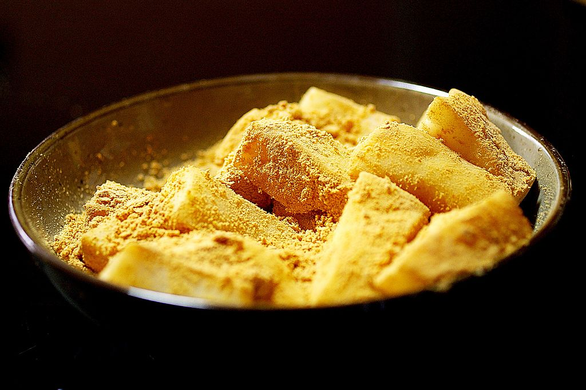

Injeolmi (인절미)

Injeolmi (인절미) is a type of Korean rice cake made with glutinous rice.
Ingredients
- 2 cups - Sweet rice flour
- 2 Tbsp - Sugar
- 1 tsp - Salt
- 1.25 cup - Water
- Soybean powder coating
- 1/2 cup - Roasted soybean powder
- 1/2 tsp - Sugar
- 1/8 tsp - Salt
Steps
- On a sheet pan or a brownie pan, coat the bottom of the pan by spreading out the roasted soybean flour with your hands. For the 2 cup rice flour recipe, I spread about 9x8 inch area of my 9x13 brownie pan. So I guess an 8x8 pan will work too. Sprinkle about 1 tsp of sugar and a light sprinkle of salt on top of the soybean flour. Set aside.
- In a microwavable bowl, add sweet rice flour (aka mochiko flour), salt and sugar. Mix with a whisk.
- Add water to flour mixture and mix with a spatula until everything is well blended and no dry flour exists. Be sure to scrape the bottom of the bowl to mix in all the flour. Even out the top with a spatula and cover with a plastic wrap.
- Put the covered bowl in the microwave and cook on HIGH for 2 minutes. Take out the bowl, remove the wrap (be careful of the hot steam as you uncover). You will see that only the top inch layer or so is cooked. Using a spatula, mix it so the top layer goes to the bottom and the uncooked mixture comes to the top. Cover with a wrap once again.
- Microwave HIGH for 2 minutes again. Uncover, mix and cover with wrap one last time.
- Now, microwave HIGH for just 1 minute. Uncover and this time, dip the spatula in cold water and mix a couple of times. Repeat 2-3 times. This helps the rice cake not stick to the spatula too much and also cools down the tteok a little bit while adding additional moisture. Alternatively, you can use a stand mixer to kind of knead the dough. Do it for 1-2 minutes and sprinkle about 1/2 to 1 Tbs of water while you knead it.
- Have the soybean flour sheet pan and bowl of cold water ready. Put disposable plastic gloves on. The plastic gloves are not a must but it just makes things easier (not have your hand all covered in tteok). Form the Injeolmi rice cake into one ball using a spatula (because it will still be too hot for your hands) and transfer it over to the center of the sheet pan. Now, wet your plastic gloves with cold water and quickly press down the rice cake to spread it out. Repeat wetting your gloves if you feel it's too hot or it's sticking. Press and spread until it covers most of the soybean powder area or until you get your desired thickness.
- Cover the top with more soybean powder. Using scissors, cut it into long strips and then each strip into smaller squares or rectangles. For each cut piece, cover the cut sides with soybean flour so it's fully covered all around. The soybean powder prevents Injeolmi from drying out.
- Enjoy with some lovely tea and honey for dipping!